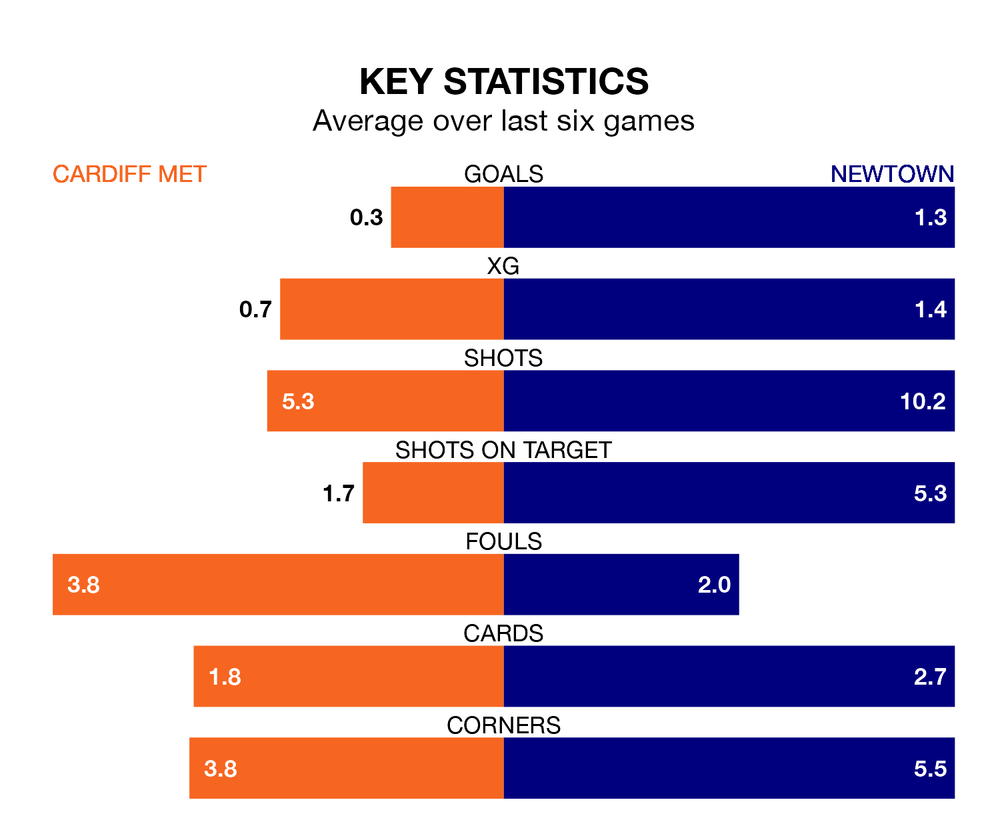

Cardiff Met host Newtown in Sunday's early match at the Cardiff International Sports Stadium looking to bounce back from defeat last time out in the Welsh Premier League.
The Archers, who sit zero in the league after 31 games, fell to a 5-0 home defeat to The New Saints on April 13.
They face a Newtown side who picked up a win in their last match, a 5-0 victory against Caernarfon Town, and who sit sixth in the table.
Cardiff are in bad form in the Welsh Premier League, with one win and five losses from their last six games.
With two wins and two draws over that period, Newtown's form is better – they have taken eight points from 18, compared to the Archers's three.
In the last 10 years, Cardiff and Newtown have played each other on 22 occasions. Cardiff won 12 of them, Newtown six, and they drew four times.
On average, the Archers scored 1.4 goals and the White Stars 1.2 in those matches.
Their last meeting was on March 9, when Newtown won 2-0 at home.
With 34 goals in 31 games so far this season, the hosts are the league's-2th-lowest scorers with 1.1 goals per game. And they are conceding more than average, letting in 60 goals at a rate of 1.9 per game.
The White Stars, meanwhile, are average scorers, with 1.5 goals per game. They have also conceded 1.5 goals per game.
Updated: 15:40 (UTC), 18/04/24